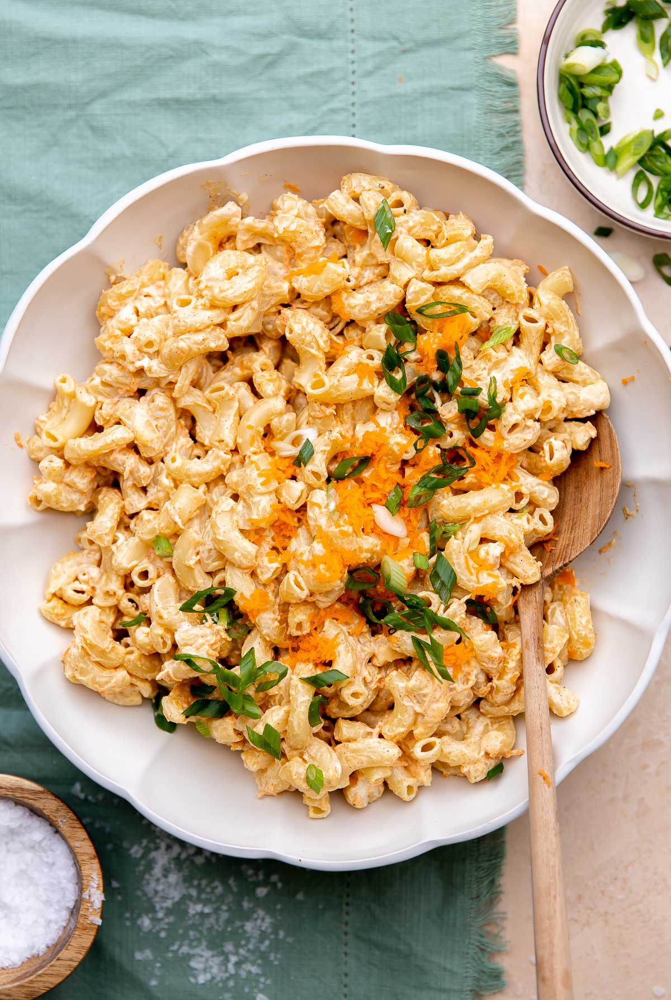

Hawai'i Style Mac Salad Recipe

Description
Macaroni salad is a popular side dish in Hawai'i, showing up at potluck tables, beach picnics, and, of course, as a vital component of any plate lunch.
Ingredients
- 2 c Best Foods mayonnaise
- 1 1/2 T grated onion
- 1 T sugar
- 1 lb elbow macaroni
- 1/4 c apple cider vinegar
- 5 green onions, sliced thinly
- 2 celery ribs, small dice
- 1 c grated carrots
- salt & pepper to taste
Steps
- Combine the mayo, grated onion, and sugar.
- Cook the macaroni 2-3 minutes more than the recommended cooking time, past al dente (the pasta will absorb the dressing better).
- Drain the pasta and combine with the apple cider vinegar.
- Combine the pasta and the mayo dressing, ensuring that the dressing is incorporated evenly.
- Add the remaining ingredients, season with salt and pepper to taste.